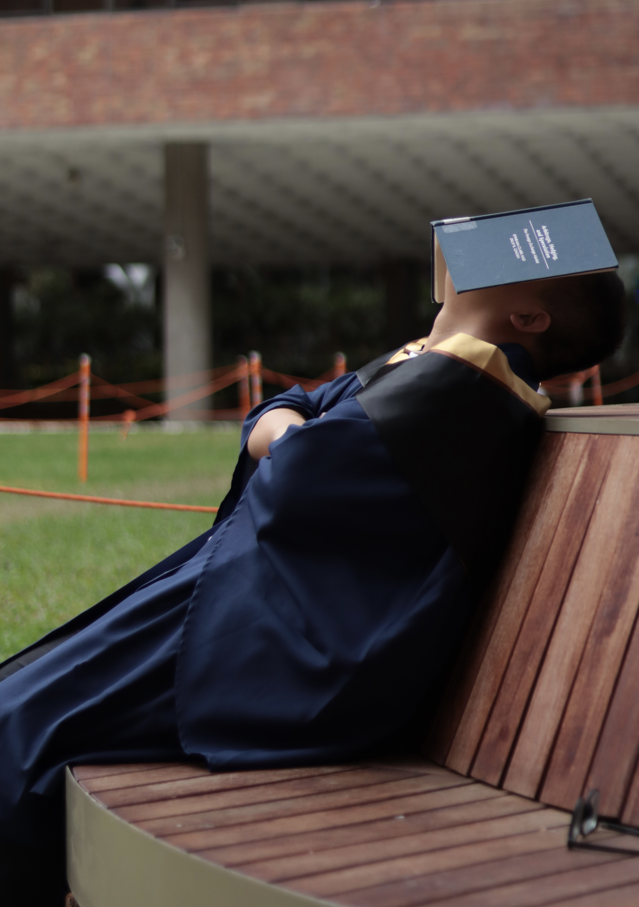

|  | ZHANG, Zhihui, Research Assistant |
I am currently working as a research assistant at JC School of Public Health and Primary Care (SPHPC), The Chinese University of Hong Kong (CUHK) under the guidance of Prof.Maggie Wang. Previously, I received my master degree with distinction at the Department of Applied Mathematics, The Hong Kong Polytechnic University (PolyU), under the supervision of Prof. Min Dai from Feburary 2023 to January 2024. I received my Bachelor's Degree in Financial Mathematics from Guangxi University (GXU) in 2022. During my undergraduate studies, I took courses in mathematics such as mathematical analysis, advanced algebra, probability theory and mathematical statistics, as well as economics courses such as macroeconomics and econometrics, and achieved an average score of 92.46, ranking first. In my graduate studies, I have taken courses in optimization methods, simulation and risk analysis, big data computing, and high-dimensional data analysis. In addition, during my undergraduate and postgraduate studies, I actively explored the application of data science in finance (e.g., stablecoins, local volatility models), medicine (e.g., predictive models regarding fetal diseases), etc which build a solid foundation for my future study.
Biostatistics
High-dimensional data analysis
Virus gene
Virus evolution
Exchange Learning at School of Mathematics and Statistics, Zhengzhou University
Zhengzhou, P.R.China, Aug.2019 - Jan.2020
President Scholarship of Guangxi University, 2022.6
Outstanding Graduates of Guangxi Zhuang Autonomous Region, 2022.6
Excellent thesis (design) of Guangxi University, 2022.6
Project Conclusion in China National University Student Innovation & Entrepreneurship Development Program for twice, 2022.3
The Second Prize of National College Students' Mathematical Modeling Competition, national level, 2021.11
People's Government of Guangxi Zhuang Autonomous Region Scholarship, 2021.11
People's Government of Guangxi Zhuang Autonomous Region Scholarship, 2020.11
The Third prize of Shenzhen Cup Mathematical Modelling Challenge, 2020.11
The Second prize of Asia and Pacific Mathematical Contest in Modeling, 2020.10
Excellent Student Award for eight times (Contains different categories), 2018-2022